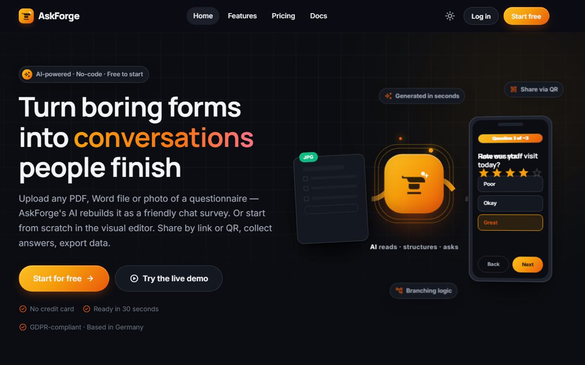
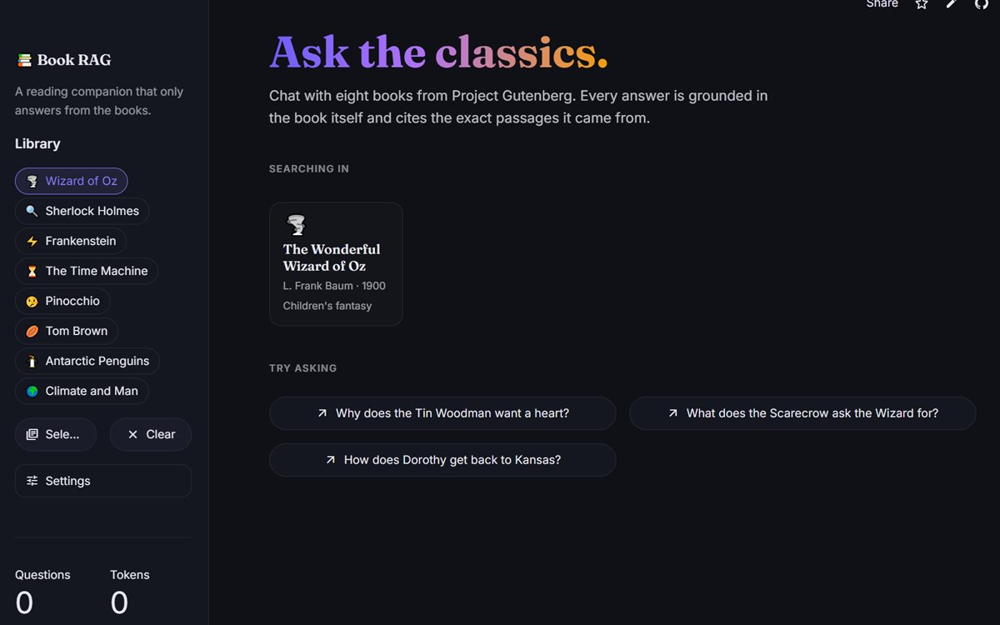
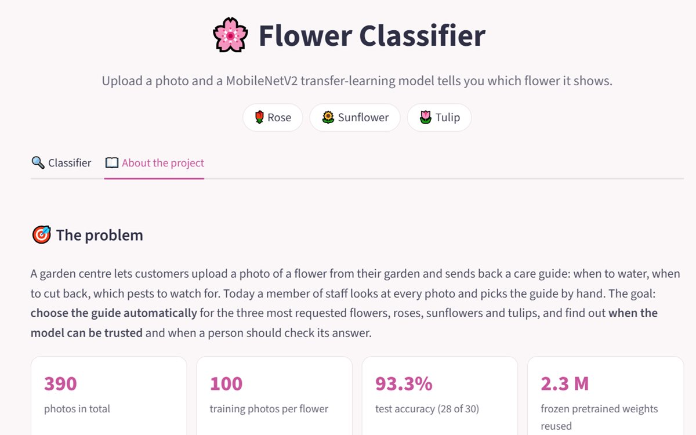
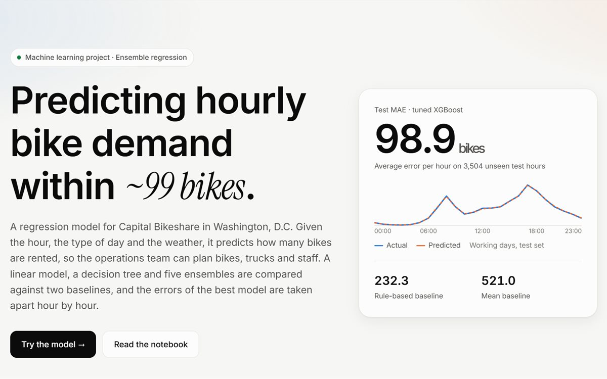
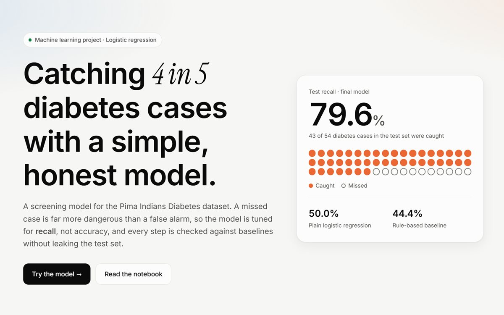

Frontend
- React
- TypeScript
- JavaScript (ES2023)
- KotlinJS
- Vue.js · Vuex
- Zustand · Redux
- React Flow
- Recharts
- HTML5 · CSS3 · SCSS
- Responsive UI
- jQuery (legacy refactoring)
Open to Fullstack & AI Engineering roles · Germany
I'm Nicolai, a Fullstack developer with 4.5+ years of commercial experience in React, TypeScript and Node.js. I'm currently completing a Data Science, Machine Learning & AI Engineering bootcamp, working with LLMs, RAG pipelines and production-grade AI agents.
01 · About
I'm a Fullstack JavaScript developer based in Germany. Over the past 4.5+ years I've built complex web applications, contributed to SaaS products and shipped frontends where usability, maintainability and reliable workflows matter.
From 2022 to 2026 I was a Software Developer at Inspire Technologies, where I made a major contribution to the low-code MR.KNOW platform: the ProcessBoard and a professional BPMN Editor (frontend & KotlinJS), the interactive Process Map, a redesign of the Process Monitor, and refactoring of legacy JavaScript/jQuery code. That taught me to work with complex application logic and established codebases while continuously improving the product.
On my own I designed and built AskForge, a SaaS platform, from the first idea to production: architecture, integrations, payments and a graph-based no-code logic builder.
Now I'm adding a second discipline: data science, machine learning and AI engineering. I enjoy taking ownership of technical decisions, collaborating across disciplines and building software that makes a measurable difference for its users.
neue fische × SPICED
Statistics, classical ML, deep learning, NLP, LLMs, RAG and LangGraph agents. Up next: MCP, multi-agent systems, evals and AI safety.
SaaS · built solo
Full-stack architecture with React, TypeScript, Node.js, Express and Prisma; Stripe and Google Cloud Vision; React Flow logic builder.
Software Developer · St. Georgen
MR.KNOW low-code platform: BPMN ProcessBoard & Editor, interactive Process Map (KotlinJS), Process Monitor redesign, legacy jQuery refactoring.
GeekBrains online university
Where it all started: JavaScript, Vue, React, Node.js, Linux and Git.
02 · Skills
A solid foundation in web engineering, and a growing toolkit for data, machine learning and AI agents.
What I'm learning next in the bootcamp, before January 2027:
03 · Projects

Featured · SaaS · Solo founder
Turns boring forms into conversations people finish. Upload a PDF, Word file or a photo of a questionnaire, and AskForge rebuilds it as a friendly chat survey, or you can start from scratch in a visual editor. Surveys are shared by link or QR code, and responses can be exported.
AI Agent · In active development
A support-ticket assistant for a fictional SaaS company. It reads an incoming ticket, looks up the customer's account, classifies the ticket and either resolves it automatically or hands it to a human for a decision.
interrupt() pause/resume, so a paused run continues even from another process
web_fetch / code_execution server tools
LLM · RAG · Live demo
A reading companion for eight classic books from Project Gutenberg. It answers only from the books themselves and cites the exact passages each answer is based on. When the book doesn't contain the answer, it says so instead of guessing.

Computer Vision · Live demo
Recognises roses, sunflowers and tulips from a photo, trained on only 100 photos per flower by reusing a frozen MobileNetV2 pretrained on ImageNet. The scenario: a garden centre picks the right care guide automatically and knows when a person should check the answer.

Regression · Ensembles · Live demo
Predicts how many bikes Capital Bikeshare in Washington, D.C. rents in an hour, from the hour, the type of day and the weather, so the operations team can plan bikes, trucks and staff. A linear model, a decision tree and five ensembles are compared against two baselines.
Pipeline, models chosen by cross-validation and the
test set opened once
EDA · Classification · Live demo
A screening model for the Pima Indians Diabetes dataset. A missed case is far more dangerous than a false alarm, so the model is tuned for recall, not accuracy, and every step is checked against baselines without leaking the test set.
04 · Contact
I'm open to Fullstack, Frontend and AI Engineering roles. The fastest way to reach me is LinkedIn.